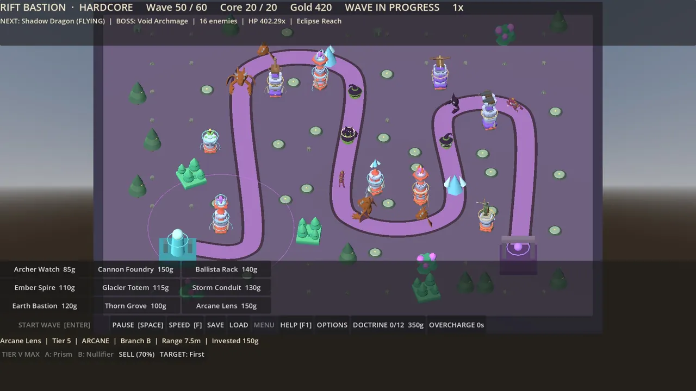
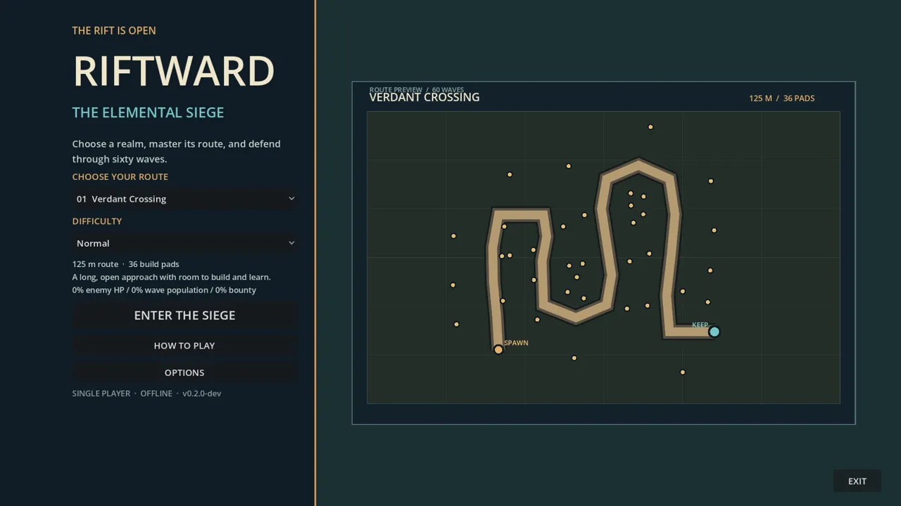
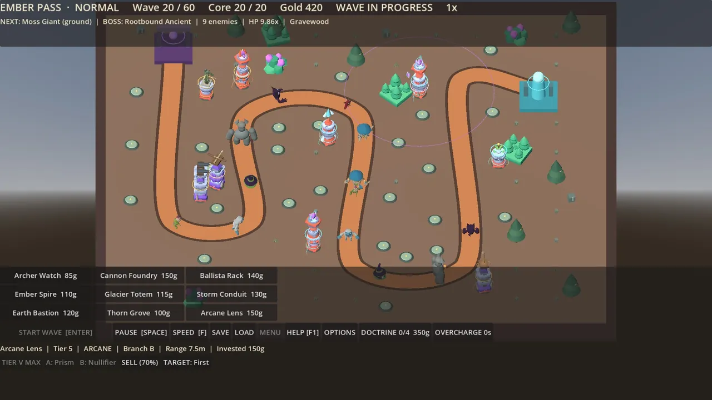

Jogo · No ar
Tower Defence Riftward
Planeje suas defesas em quatro rotas, combine nove famílias de torres e resista a sessenta ondas cada vez mais difíceis em uma campanha para um jogador.
Para quem é: Para fãs de tower defense que querem resistir a um cerco elemental.
O que faz
- Campanha para um jogador centrada em torres elementais
- Escolha entre quatro rotas
- Nove famílias de torres para construir e combinar
- Sessenta ondas de ataques cada vez mais intensos
Capturas de tela


